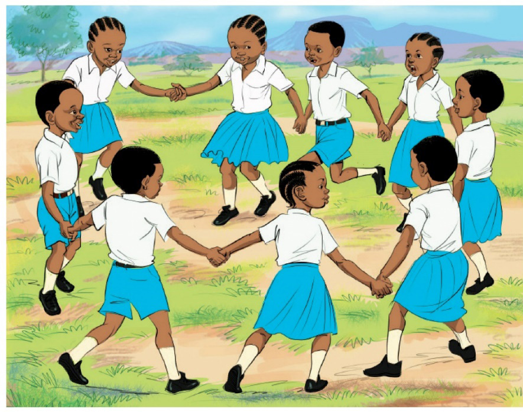

- List all similar shapes by writing their letters together.
- Write the letters of all the shapes of triangles.
- Write the letters of all the shapes with four sides.
- Write the names of all the shapes of plane figures you know.
Activity
Playing ukuti-ukuti
Let us play together by joining our hands.
